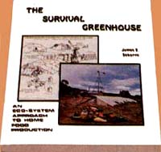
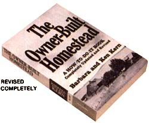
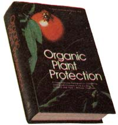
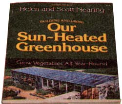

ENCYCLOPEDIA OF ORGANIC GARDENING edited by J.I. Rodale and staff. The thousands of listings are alphabetically indexed for instant reference. Step-by-step, easy-to-understand, non-technical language. 1,145
pages. Hard cover, 67005 $14.95
THE SURVIVAL GREENHOUSE by James B. DeKorne, How to build and manage a self-contained food production unit-an underground hydroponic greenhouse and aquaculture tank-that's powered by the wind, heated by the sun, and fed on compost, 165 pages. Paperback.. 72005 $7.50
STRAWBERRIES: KING OF THE FRUITS by M.E. Boylan. A guide to the organic growing of strawberries. 95 pages. Paperback. 67032 $3.00
HYDRO-STORY by Charles E. Sherman and Hap Brenizer. If you're looking for a nuts-and-bolts manual to hydroponic techniques with a bit of "heightened consciousness" thrown in to boot ... you're going to enjoy this profusely illustrated, entertainingly written book. Contains detailed plans for three easy-to-build greenhouses and complete step-by-step procedures for setting up and maintaining your own soil-less growing system. 95 pages, Large paperback. 67026 $3.95
THE MULCH BOOK: A GUIDE FOR THE FAMILY FOOD GARDENER by Stu Campbell. Covers all methods, and discusses the how- not -to as well as the how-to of the subject. 136 pages. Paperback. 67058 $3.96
EVERYONE'S GUIDE TO HOME COMPOSTING by R. Bem. A comprehensive, no-nonsense guide to the "manufacture" and use of all kinds of compost. Contains a bibliography, glossary, index, and numerous illustrations. 112 pages. Paperback. 67050 $3.95
HOW TO GROW MORE VEGETABLES THAN YOU EVER THOUGHT POSSIBLE ON LESS LAND THAN YOU CAN IMAGINE by John Jeavons. The best plain-language explanation (some would say "the only") of biodynamic/French intensive gardening techniques we've yet seen. 82 pages. Large paperback. 67027 $4.00
THE OWNER-BUILT HOMESTEAD by Ken Kern. The basic homesteading primer, by the author of The OwnerBuilt Home. A clearly written and illustrated guide to planning for-and achieving-the self-sufficient life. 394 pages. Paperback. 70023 $6.95
Get a Head Start on Spring
If you'd like to make your land work harder for you ... want to grow fruits and vegetables big, grow'em healthy, and grow'em beautiful . . .
MOTHER HAS THE BOOKS
TO SHOW YOU HOW
Each is the pick of the latest crop To help make your land burst forth with good tastin', nutritious things to eat, can, or preserve to cut down on your family's food bill or even help you find that private little self, sufficient place in the country that you've been hungering the thirst for.
Whether you want to start homesteading or start leading a simpler life file newest ideas the latest information the best of the old-timey techniques are hem, You'll even find footprint plans for building a low-cost, year-round to" and-heat-producing solar greenhouse. Think of the, money that you can't save! One of these packed with-facts books can show you how to turn a postage-stamp-sized backyard plot into a land of plenty, Another will carry you through every step of growing fruits and the organic method. And...
H undreds of illustrations how to-do-it photos and step-by-step drawings reduce the guess work, take out the disappointment will add to the real joy of doing it yourself At a big savings in both time and money.
TRY ANY OF THESE BOOKS FOR 10 DAYS
Money-back Guarantee There's no risk no obligation, If At the end of 10 days youre not completely satisfied return the books) in good condition and you? money will be quickly and happily refunded. Fill in and mail the handy order card todey Be sure And enclose your check or money order for the correct amount.
As the old sayin goes" If winter comes can spring be far behind?"
ORGANIC PLANT PROTECTION edited by Roger B. Yepsen, Jr., and the editors of Organic Gardening and Farming. Insecticides, herbicides, fungicides, bah! The truth is, anyone can nurture healthy crops of fruits and vegetables without using dangerous chemicals to "control" natural pests ... and this book, without a doubt, is one of the best places to go to learn how. ORGANIC PLANT PROTECTION first stresses basic preventive measures any gardener can take-such as developing healthy soil, using resistant crop varieties, and practicing companion planting-to avoid insect and disease infestations, and proceeds from there to describe the various "weapons"- traps, repellents, and biological controls-that can be safely put to work in the event that a problem does occur. Thousands of bugs and diseases-and how to prevent and/or get rid of them-are defined and described ... and a total of 200 color photos and line drawings make it easy for the reader to identify the most common maladies that befall backyard food plants. 688 pages. Hard cover. 67052 $12.96
BETTER VEGETABLE GARDENS THE CHINESE WAY by Peter Chan with Spencer Gill. Everything you've never known and never knew enough to ask about composting, starting seeds indoors, making and using a cold frame, fertilizing and protecting your plants naturally, and otherwise managing your vegetable plot in the ancient but up-to-the-minute Chinese way. A beautiful book and a revelation for many Western green thumbers. 96 pages. Paperback. 67003 $4.95
THE POSTAGE STAMP GARDEN BOOK: HOW TO GROW ALL THE FOOD YOU CAN EAT IN VERY LITTLE SPACE by Duane Newcomb. A uniquely comprehensive volume on intensive organic gardening. Contains sections on rapid soil conditioning, pest control, planning (and much more), as well as appendices to seed sources and where to find expert advice and assistance. Illustrated. 150 pages. Paperback. 67030 $4.95
MORE FOOD FROM YOUR GARDEN by Jacob R. Mittleider. Outlines the famous "Mittleider Method" for growing huge quantities of vegetables in easily constructed "grow boxes" and an artificial soil mix. 194 pages. Paperback. 67038 $4.50
GROW IT! by Richard W. Langer, This work first appeared in 1972 and won a considerable reputation as a beginner's guide to crop production and the care of small livestock. The competition in back-to-the-land literature is stiffer these days, and some of Langer's advice has been questioned (particularly in the field of animal husbandry). Nonetheless, GROW IT! is still a good overview of small-scale farming by natural methods ... especially since it covers topics such as berries, fruits, grains, forage crops, and pasture, which are often omitted from standard "garden" books. Many drawings of low-cost homemade equipment are included, and there's a useful appendix listing sources of supplies and further information. 365 pages. Hard cover. 70008 $4.95
HOW TO GROW VEGETABLES AND FRUITS BY THE ORGANIC METHOD edited by J.I. Rodale and staff. A treasure house of information for the organic gardener! Chock-full of details not found elsewhere. Starts with the basics of planning a garden and carries you through every step of growing to harvest and final storage of produce. Complete listings of vegetables, fruits, nuts, and herbs, Each plant is discussed under subheadings of range and soil, seed and planting, culture, enemies, and harvest. Dozens of case histories and photographs of successful organic gardeners. 926 pages. Hard cover. 67006 $13.95
FINDING AND BUYING YOUR PLACE IN THE COUNTRY by Los Scher. A practicing attorney tells all about locating and inspecting a parcel, dealing with owners and agents, financing your purchase, and generally avoiding all the pitfalls in land buying that await the uninformed. 393 pages. Paperback. 70021 $6.95
THE MANUAL OF PRACTICAL HOMESTEADING by John Vivian, A working, nitty-gritty handbook of how-to instruction for self-sufficient gardening, stock raising, poultry care, canning, and preserving ... just about all you need to know to make a life for yourself on a rugged, demanding homestead. 340 pages. Paperback. 70013 $5.95
COUNTRY WOMEN: A HANDBOOK FOR THE NEW FARMER by Jeanne Totrault and Sherry Thomas. An inspiring, instructive manual of basic rural skills ... and a guide to discovering your rightful relationship to the land. 383 pages. Large paperback. 70031 $6.95
DOWN-TO-EARTH VEGETABLE GARDENING KNOW HOW featuring Dick Raymond. Here's one of the few books on the subject that covers it all: everything from initial site selection to planting, harvesting, and storage. Full of often-overlooked basics and hard-to-find facts. 160 pages. Large paperback. 67031 $5.95
BUILDING AND USING OUR SUN-HEATED GREEN-HOUSE by Helen and Scott Nearing. In this Garden Way book, veteran homesteaders Helen and Scott Nearing explain how they've been able to keep themselves in fresh vegetables year round (in chilly New England) with the aid of a single unheated (except for Ole Sol) greenhouse. They've done all the hard work and research ... now you can reap the benefits as you read how Helen and Scott built their novel "pit" greenhouse, how they've kept their costs to a minimum (and their food production at a maximum), and how they've conquered the cold weather problem. An extremely valuable book for anyone who'd like to grow vegetables in the dead of winter, but thinks "it can't be done". This book proves it can! 128 pages. Paperback. 72013 $6.95
FOXFIRE 4 edited by Eliot Wigginton. Still more odes to plain living from the mountains of southern Appalachia. This latest volume in the Foxfire series contains information on water systems, knife making, wood carving, gardening, cheesemaking, wooden sleds, bird traps and rabbit boxes, logging, tar making, berry buckets, and much more. Included also are an appendix that updates material contained in the first three Foxfire books, a listing of periodicals and resource materials about Appalachia, and an Afterword by folklore scholar Richard M. Dorson. Lotsa good reading for the money, as always. 361 pages.
70029 Paperback. $5.95
70027 Hard cover. $10.95
YOUR HOMEMADE GREENHOUSE AND HOW TO BUILD IT by Jack Kramer. For the money, a fine and comprehensive manual on the subject, with clear plans for erecting a goodly number of different greenhouse structures. 95 pages. Large paperback. 72009 $2.95
THE FOOD AND HEAT PRODUCING SOLAR GREENHOUSE by Rick Fisher and Bill Yanda. Another great nuts-and-bolts book from the publishers of How to Keep Your Volkswagen Alive (and you know how good that one was!). Three years' work and the construction and investigation of over 60 greenhouses went into this guide, and it shows it. Wanna grow a substantial amount of food in a very small space? This manual really shows you how! This is the book you want if you need to start with a complete list of the materials and tools you'll need for the fabrication of your own greenhouse. Design and construction of the building are also included in great detail. As are explicit instructions for calculating the number of hours of sunlight your greenhouse will receive and for turning the structure into a bountiful garden. Food self-sufficiency? This book all by itself can put you and your family a long, long way down the road toward that goal. 161 pages. Paperback. 72001 $6.00
BUILD YOUR OWN GREENHOUSE by Charles D. Neal. Just about the best and most complete manual we've found ... with how-to-do-it instructions for foundations, framing, wiring, and plumbing, and detailed, step-by-step directions and photos for constructing exceptionally simple and efficient greenhouses. 129 pages. Hard cover. 72003 $9.95
SIMPLE LIVING: AN ILLUSTRATED WORKBOOK FOR THE NEW FARM AND HOME by Jacques Massacrier. A thorough, nicely illustrated, hand-lettered guide to hundreds of self-sufficient living skills. Highly recommended for ex-"city fellers". 192 pages. Large paperback. 70019 $7.95
|
 |
 |
 |
|
 |
|
|